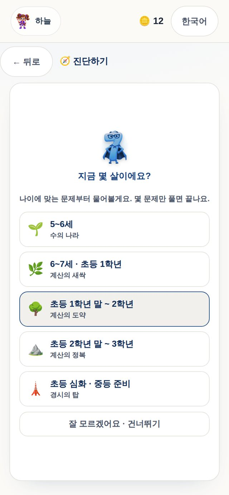
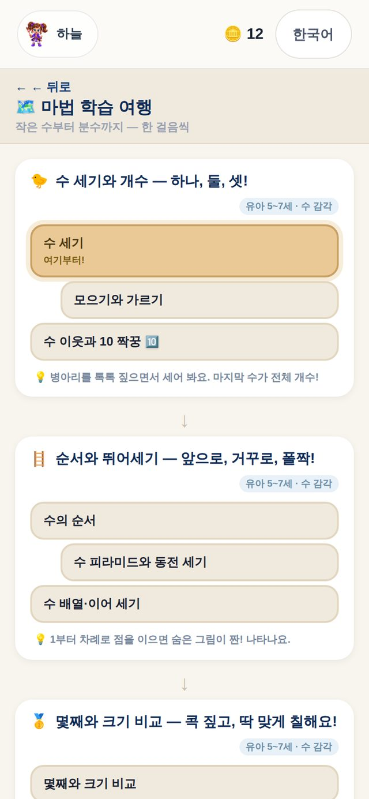
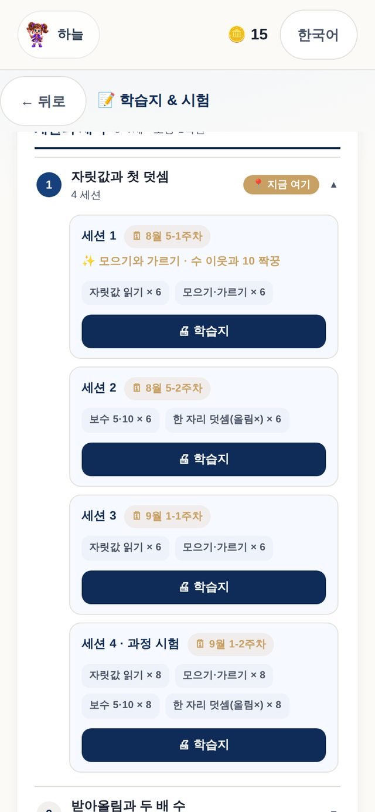
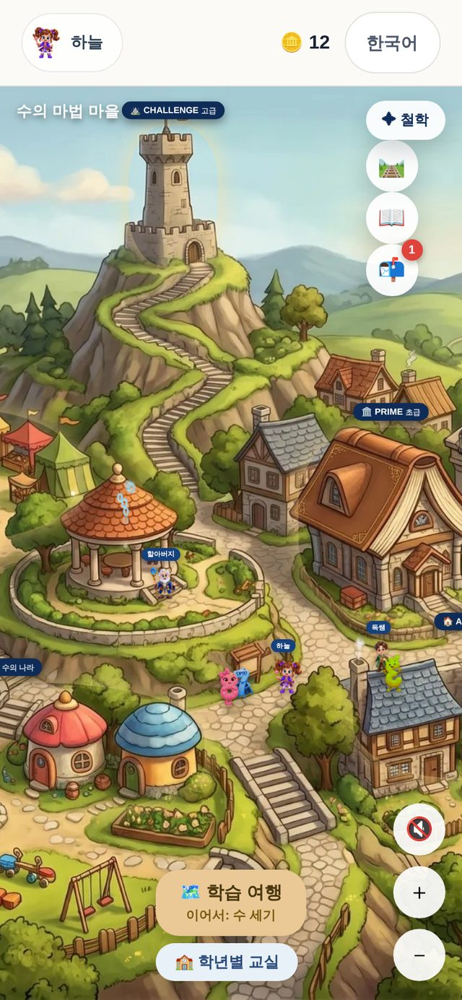
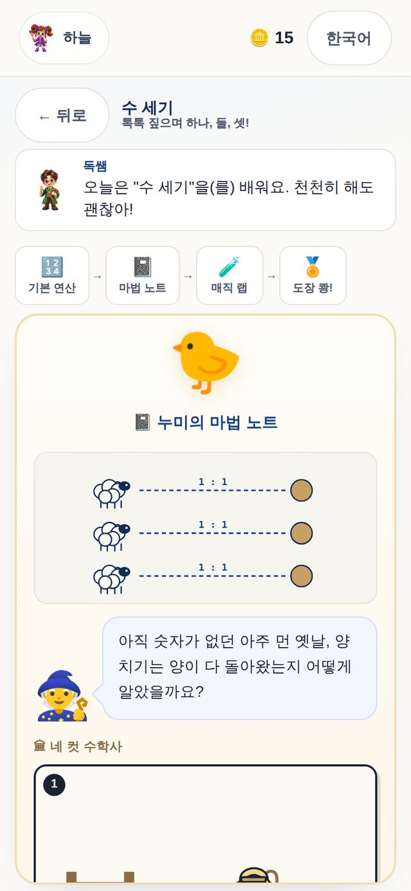
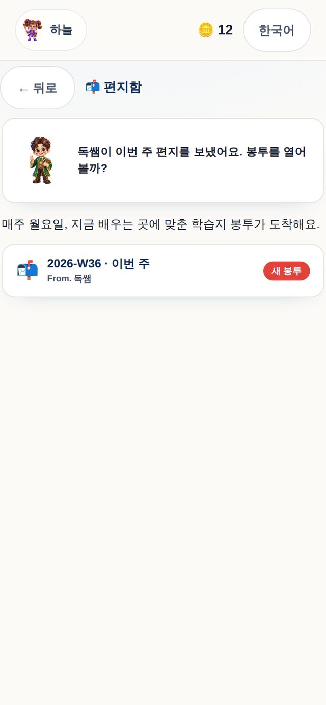
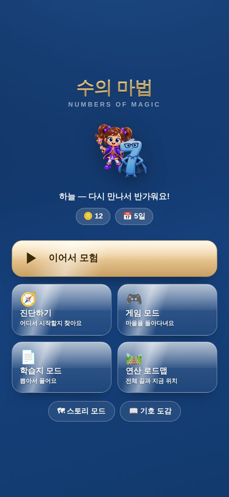
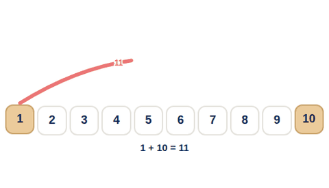
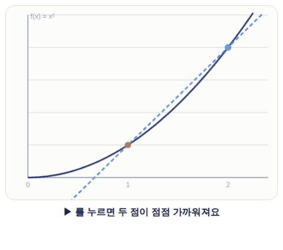
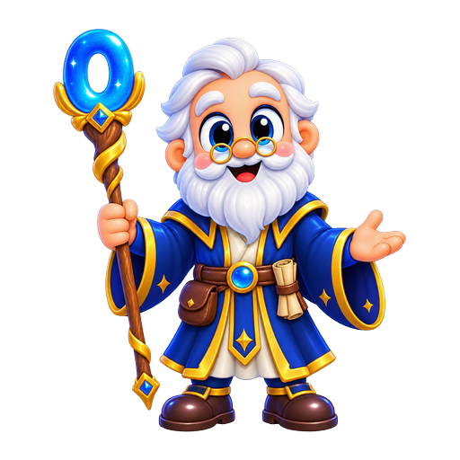

DOCSSAM · 만 5세부터
속도가 아니라 수 감각입니다. Numbers of Magic은 어려운 수를 내가 다루기 쉬운 수로 펼쳐서 푸는 법을 가르칩니다. 아이는 숫자 마을에서 배우고, 부모는 주 1회·주 2회 중 고른 만큼 매주 학습지를 받습니다.
Philosophy · 무엇이 다른가
학교 시험은 틀리기 쉬운 문제로 아이를 가릅니다. 대부분의 학원은 유형을 외워 답을 맞히는 법을 가르치죠. DOCSSAM은 수의 규칙을 이용해 문제를 내 손에 맞게 다시 만드는 힘을 키웁니다. 실수는 줄고, 수에 대한 창의성과 자신감이 자랍니다.
"이렇게 나오면
이렇게 푼다"
세로셈으로 받아내림하다 실수. 답은 구해도 원리는 모르고, 유형이 바뀌면 무너집니다.
"수를 펼쳐
쉽게 만든다"
8+7이 어려우면 7에서 2를 빌려 10을 먼저 만듭니다. 오늘의 이 습관이 훗날 분배법칙이 되고, 미적분까지 같은 로드맵으로 이어집니다.
속도만 재면 아이는 절차를 외웁니다. 5를 2와 3으로 손으로 갈라 보고, 8 + 7 앞에서 스스로 10을 먼저 만들 때 수가 친구가 됩니다. 그래서 유아 단계에는 시간 재기가 없습니다.
8 + 7 → 8 + 2 + 5, 47 × 6 → 40 × 6 + 7 × 6, × 25 → × 100 ÷ 4. 같은 손놀림이 초1의 보수에서 중3의 (a+b)², 고등의 Σ까지 이어집니다. 과정을 바꿔도 방법은 바뀌지 않습니다.
척추는 교과 흐름을 따르는 세로셈입니다. 학교 진도 그대로, 정확한 절차가 먼저. 창의 연산은 그 척추 위의 마법 슬롯이라 아이는 같은 문제를 필산으로 한 번, 펼쳐서 한 번 만납니다.
연산만 빨라진 아이는 절차만 익혔기 때문에 문장 속의 수 앞에서 멈춥니다. 수를 펼칠 줄 알아야 문장 속 수도 다룰 수 있습니다. 그래서 초등 연산 구간의 학습지에는 그 주 연산을 문장으로 옮긴 회차가 함께 인쇄됩니다.
f에 놀라고 i에서 놓아 버린 것은 기호가 개념보다 먼저 왔기 때문입니다. 여기서는 말 → 그림 → 내 표기 → 표준 기호 순서를 지키고, 기호마다 읽는 법과 한 줄 번역문을 붙입니다.
그래서 저희가 드리는 것은 수업이 아니라 학습지와 진단, 계획입니다. 짧은 진단이 지금 자리를 찾고, 그 자리가 주차별 로드맵으로 펼쳐지고, 매주 학습지가 도착합니다.
Worksheet DNA · 왜 이 학습지인가
목표는 빠른 연산이 아니라 수와 친해지는 것, 수 감각입니다. 그래서 교과 흐름을 따라가는 필산, 수를 펼쳐 내 손에 맞게 바꾸는 창의 연산, 그 수가 들어 있는 문장을 읽어 내는 문장제가 함께 갑니다. 연산만 빨라진 아이는 절차만 익혔기 때문에 문장 속의 수 앞에서 멈춥니다.
학교 진도 그대로, 세로셈으로 정확하게. 속도가 아니라 정확한 절차가 먼저입니다.
같은 문제를 내 손에 맞게 다시 만듭니다. 수 감각은 여기서 자랍니다.
같은 수를 문장에서 꺼내 읽습니다. 한국어·영어·중국어로.
세 칸이 같은 수 47+38을 다룹니다. 학습지 모드에는 교과 연산 연습, 수의 마법 탐험, 계산·문장제 혼합 옵션이 있어 한 아이가 한 문제를 세 방향에서 만납니다.
The Roadmap · 유아부터 미적분Ⅰ까지
먼저 수와 친해지고, 수 감각이 생기면 교과 흐름대로 필산으로 다지고, 그 수가 들어 있는 문장을 읽어 내고, 마지막에 기호로 옮겨 적습니다. 아래 일곱 단계가 그 순서입니다.
수 세기와 개수, 순서와 뛰어세기, 몇째와 크기 비교, 수의 여러 표현. 손으로 모으고 가릅니다.
시간을 재지 않습니다. 구슬을 두 접시로 옮기며 5가 2와 3으로 갈라졌다가 다시 모이는 것을 손으로 봅니다. 이 가르기가 다음 단계의 보수이고, 훗날 분배법칙입니다.
자릿값과 모으기·가르기, 보수 5와 10, 받아올림·받아내림, 두 자리에서 네 자리 덧뺄셈, 구구단 2~9단, 나눗셈의 시작.
수 감각의 첫 습관은 보수입니다. 8 + 7이 어려우면 7에서 2를 빌려 10을 먼저 만듭니다. 필산은 학교 진도 그대로 정확한 절차로 다지고, 같은 문제를 그 옆에서 펼쳐 다시 만듭니다.
두 자리×두 자리, 나눗셈과 역연산, 분수의 첫걸음, 세 자리×두 자리, 두 자리로 나누기, 혼합계산.
분배법칙을 문자보다 수로 먼저 배웁니다. 47 × 6은 40 × 6과 7 × 6으로 쪼개고, × 5는 × 10의 절반으로 봅니다. 아이가 가장 자주 멈추는 시기라, 정체 감지와 보강이 여기서 제일 많이 일합니다.
소수 덧뺄과 곱셈, 제곱수, 약수와 배수, 이분모 분수, 분수 곱셈과 나눗셈, 수열, 백분율과 비율.
수 사이의 관계로 계산을 줄입니다. 2와 5는 친구라서 × 25는 × 100 ÷ 4입니다. 과정은 가로줄이고 계보는 세로줄이라, 마법마다 나중에 무엇으로 자라는지가 카드에 적혀 있습니다.
한쪽으로 모으기와 100 보수 곱, 피라미드 곱셈, 진법과 1001의 법칙, 순환소수, 50·100·1000 근처의 제곱.
관계를 알면 계산이 사라집니다. 이 단계의 출구가 곧 중학교의 입구라, 여기서 손으로 한 것이 중3의 곱셈공식으로 그대로 이어집니다. 권유일 뿐이라 건너뛰어도 됩니다.
정수와 유리수, 부호의 규칙, 문자와 식, 방정식과 비례, 지수와 다항식, 제곱근, 곱셈공식과 인수분해.
기호가 바뀌는 순간이 진짜 고비입니다. 그래서 말 → 그림 → 내 표기 → 표준 기호 순서를 지킵니다. 음수는 해발과 해저로, √는 땅 위의 9와 뿌리의 3으로 먼저 만납니다.
다항식과 나머지정리, 이차방정식, 점과 직선·원, 지수와 로그, 삼각함수, 수열과 Σ, 극한과 미분, 접선과 적분.
새 기호는 이미 아는 마법의 새 이름표입니다. Σ는 초등에서 하던 짝지어 더하기가 기호 옷을 입은 것입니다. 미적분은 기법보다 왜 태어났는지를 실험실에서 먼저 보고 들어갑니다.
주 1회 기준으로 연산 구간(과정 1~25)은 119주 약 2년 3개월, 유아부터 미적분Ⅰ까지 전 구간은 216주 약 4년 2개월입니다. 주 2회를 고르면 각각 88주와 159주로 줄어듭니다.
순서는 권유일 뿐 어디에도 잠금이 없습니다. 레벨은 언제든 바꿀 수 있습니다.
함수의 f에 놀라고 허수의 i에서 수학을 놓아 버린 기억, 부모님도 있으실 겁니다. 수학은 언어라서, 기호가 바뀌는 순간이 진짜 고비입니다. 여기서는 모든 기호가 번역문을 갖습니다 — ∫는 "잘게 쪼개 다 더해라".
Placement · 아이의 수준부터
처음 들어오면 짧은 진단으로 지금 어디쯤인지 봅니다. 그 결과가 학습 여행 지도 위의 "지금 여기"가 되고, 주 1회·주 2회 선택에 따라 주차별 로드맵으로 펼쳐집니다. 레벨은 언제든 바꿀 수 있습니다.



Why · 상담에서 늘 받는 질문
학원은 반 단위로만 멈출 수 있습니다. 같은 유형에서 두 번 연속 막히면 그 아이만 한 단계 아래로 내려갔다 옵니다.
진단이 정한 과정의 그 주 회차가 봉투로 옵니다. 회차마다 개념과 빨간 예시 풀이가 앞에 있고, 초등 연산 구간에는 그 주 연산을 문장으로 옮긴 문장제가 함께 인쇄됩니다.
주 1회 1만 원 · 주 2회 2만 원같은 유형에서 최근 두 번이 연속으로 기준 아래면 봉투 맨 위에 몸풀기 카드가 올라옵니다. 십진블록·수직선처럼 한 단계 아래 시각화로 내려갔다 다시 올라옵니다.
권유이지 잠금이 아닙니다몇 문제로 유아부터 고등까지 어디서 시작할지 찾고, 그 자리가 로드맵 위에 찍힙니다. 주 1회·주 2회를 고르면 과정 전체가 주차로 나뉜 개인 계획표로 인쇄됩니다.
레벨은 언제든 바꿉니다유닛 제목과 개념 설명, 유형 이름, 문장제 본문, 학습지와 진단 화면까지 같은 데이터에서 세 언어가 나옵니다. 다문화 가정과 영어 유치원 아이가 같은 로드맵을 걷습니다.
세 언어 전 구간마법마다 그것이 태어난 장면을 만화로 먼저 보고, 눈으로 봐야 이해되는 개념은 손으로 움직이는 실험실에서 만집니다. 전설은 전설이라고 적습니다.
만화 95편 · 실험실 6과정 1의 보수가 과정 45의 적분까지 같은 데이터 위에 이어져 있습니다. 다섯 계보가 유닛마다 "이 마법은 나중에 무엇으로 자라요"로 표시됩니다.
유닛 199 · 과정 45 · 유형 180The App · 아이가 보는 화면
아이는 사람 캐릭터가 되어 고른 숫자 친구와 마을을 걷습니다. 건물이 곧 배움터이고, 게임은 늘리지 않습니다. 마을은 배우러 들어가는 문입니다.




Worksheets · 매주 도착하는 학습지
학습지는 앱과 따로 노는 부록이 아닙니다. 아이가 마을에서 배우는 바로 그 자리에 맞춰 만들어지고, 한 주에 몇 번 공부할지에 따라 주차가 나뉩니다.
한 주에 학습지 한 장. 주말에 함께 앉아 풀기 좋은 속도입니다.
한 주에 두 장. 같은 과정을 절반씩 나눠 더 자주, 더 짧게 만납니다.
Math Lab · 수학 실험실
실험실은 그 개념을 배우는 개념 노트 바로 아래에서 열립니다. 슬라이더를 밀고, 수를 바꿔 보고, 왜 그런지 눈으로 확인한 뒤 문제로 돌아옵니다. 과정과 상관없이 언제든 열어 볼 수 있습니다.


Math History · 수학사 네 컷 만화 95편
개념 노트를 열면 산문 한 줄 대신 네 컷 만화가 나옵니다. 그중 하나 — 일곱 살 가우스의 이야기입니다. 오늘 배우는 "자리끼리 더하기"와 같은 마법이라는 데서 끝납니다.
기호가 태어난 날(−, =, √…), 0을 발견한 사람들, 미적분이 생긴 이유까지 — 95편이 각자의 개념 자리에서 기다립니다.
How it works · 시작은 세 걸음
남자아이·여자아이 중 나를 고르고, 함께 다닐 숫자 친구를 정합니다. 설치 없이 브라우저에서 바로.
학습지 모드에서 주기를 고르면 과정 전체가 주차로 나뉜 개인 로드맵이 됩니다.

매주 풀고, 도장 찍고, 꾸밉니다봉투를 열어 풀고, 유닛마다 도장을 받고, 출석과 학습으로 모은 코인으로 내 숫자 친구를 꾸밉니다. 뽑기도 강화도 없습니다.
Who lives here · 마을 사람들
 누미와 친구들동행 숫자·기호 21종
누미와 친구들동행 숫자·기호 21종Price · 월 구독
학습지 횟수만 다르고, 연산 게임 학습과 무제한 연산 학습은 둘 다 전부 들어 있습니다. 아이 한 명, 한 달 기준.
지금은 승인번호 없이 모든 기능이 열려 있습니다.
FAQ · 자주 묻는 질문
만 5세부터입니다. 0급 "수의 나라"는 9까지의 수를 알고, 세고, 나누고, 비교하는 데서 시작합니다. 글을 몰라도 톡톡 짚으며 할 수 있게 만들었습니다.
앱 안의 편지함에 매주 월요일 봉투가 도착하고, 학습지 모드에서 주 1회·주 2회를 골라 개인 로드맵째로 인쇄할 수도 있습니다. 문자 알림은 준비 중입니다.
마을은 배우러 들어가는 문입니다. 마을에서 할 수 있는 일은 배우러 들어가기, 친구 보기, 다음에 갈 곳 알기 셋뿐이고 미니게임을 늘리지 않습니다. 코인은 내 숫자 친구를 꾸미는 데만 쓰고, 뽑기·강화·연속 출석 배수 같은 것은 없습니다.
화면·말풍선·학습지·문장제까지 한국어·영어·중국어 세 언어로 바꿀 수 있습니다. 가정에서 쓰는 언어로 두세요.
휴대폰·태블릿·PC 브라우저면 됩니다. 설치할 앱은 없고, 이름 하나로 진행 상황이 기기 사이에 이어집니다.
학원에서는 아이의 과정과 학습지 주기를 정하고, 인쇄한 학습지를 채점해 다음 주 봉투에 반영합니다. 아이가 어디서 막히는지 앱이 잡아내면 편지함에 짧은 몸풀기 문제가 먼저 옵니다.
Welcome · 입장
아이가 수와 친구가 되는 첫걸음. 설치도, 결제 정보도 필요 없습니다.
지금은 승인번호 없이 모든 기능이 열려 있습니다.